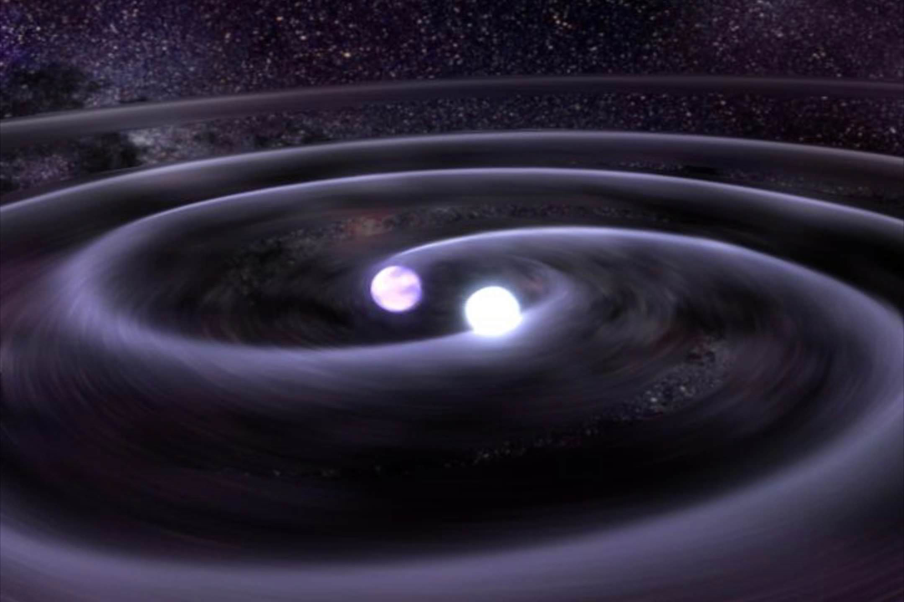

About Me

Education: Current Junior at the University of Washington in Seattle, WA. I am pursuing a double major in physics and astronomy, with minors in aeronautics and astronautics, as well as
applied mathematics.
Research Interests: I am currently working on numerical gravitational astrophysics for the LISA mission at NASA Goddard. I am interested in
extreme gravitational events such as massive black hole and neutron star mergers, extreme mass ratio inspirals, and white dwarf mergers. At the Institute for Nuclear
Theory, I am currently working on a project involving the use of machine learning to constrain the neutron star equation of state.
I am also broadly interested in novel methods to study star formation in galaxies. As of now, this includes manifold dimension reduction to map
star forming clumps in high-redshift lensed galaxies.
Hobbies: Mountaineering, Trombone, Golfing, Weight-lifting, filling out applications
Publications: ORCiD
Research

JWST LEGGOS
Strong gravitational lensing provides a natural magnifying effect,
allowing for detailed studies of high-redshift star-forming clusters. While there have been studies on the
physical properties of these clumps in strongly lensed galaxies, there is a distinct lack of software to automatically
identify and analyze regions of stellar formation. Typical methods of clump identification rely on contrast enhancement
through image smoothing and subtraction, followed by the use of visual and automatic source detection software.
While generally effective, these approaches require careful parameter tuning and manual validation,
limiting their efficiency and reproducibility. These methods also suffer from inaccuracies due to contamination from the
diffuse host galaxy, bright neighboring sources, and intracluster light. I am creating a novel software pipeline titled SUMAC
(Software for Uniform Manifold Approximation of Clusters) that automatically processes FITS files of lensed galaxies, reduces
the data using Uniform Manifold Approximation and Projection (UMAP), and outputs a topological map clustering together pixels with
similar characteristics. UMAP is trained on the SED shape of the galaxy, and by extracting pixel-by-pixel flux across wavelength bands after
UMAP clustering, a sort of pseudo-SED can be created. This is an extremely efficient way to detect star-forming regions, as well as diffuse
areas of the galaxy, potentially saving research groups from waiting hours for SEDs to be created for quick studies.
Probing the Neutron Star Equation of State via the Variational Autoencoder - The Institute for Nuclear Theory, Seattle, WA
(From the UW INT website)
Neutron stars are among the most extreme astrophysical objects,
with densities exceeding nuclear saturation. Their internal structure is governed by the equation of state (EOS), which relates pressure to energy density.
While theoretical models such as Skyrme-type interactions and relativistic mean-field (RMF) calculations provide a wide range of possible EOSs, fully exploring the
parameter space remains computationally challenging. To address this, machine-learning methods such as the Gaussian Process (GP) and
Variational Autoencoder (VAE) [2] have been proposed to learn from existing EOS models and generate new ones, facilitating a more efficient exploration of dense matter properties.
This project aims to train a VAE on a dataset of EOS models derived from Skyrme and RMF models. The VAE consists of an encoder that maps high-dimensional EOS data to a lower-dimensional
latent space and a decoder that reconstructs the EOSs from this representation. By sampling from the learned latent space encoding EOS essentials, we can generate novel yet physically
meaningful EOS models as existing models while exploring parameter regions beyond existing models. These generated EOSs will be analyzed for their astrophysical implications, including
solving the Tolman-Oppenheimer-Volkoff (TOV) equations to determine neutron star mass-radius relations.
The project will result in a robust framework for EOS generation, providing new insights into the underlying properties of dense matter. Ultimately, this approach could enhance our
understanding of dense matter physics and contribute to constraining neutron star properties through multi-messenger astrophysical observations.
Gravitational Astrophysics for the LISA Mission - NASA Goddard Space Flight Center, Greenbelt, MD
The Laser Interferometer Space Antenna (LISA) mission is a joint ESA-NASA space-based gravitational wave observatory set to launch in the late 2030s.
LISA data will be overwhelmed by gravitational wave signals from a wide range of astrophysical sources, much of which will be contaminated with unavoidable
glitches, gaps, as well as the stochastic background gravitational wave noise. LISAView will
assist in the analysis of this data as a computationally cheap tool to quickly identify areas of interest in time-series data, rapidly providing key metrics in both the time and frequency
domain in order to facilitate a quick response to gravitational events.
Contact
Email: adr55@uw.edu